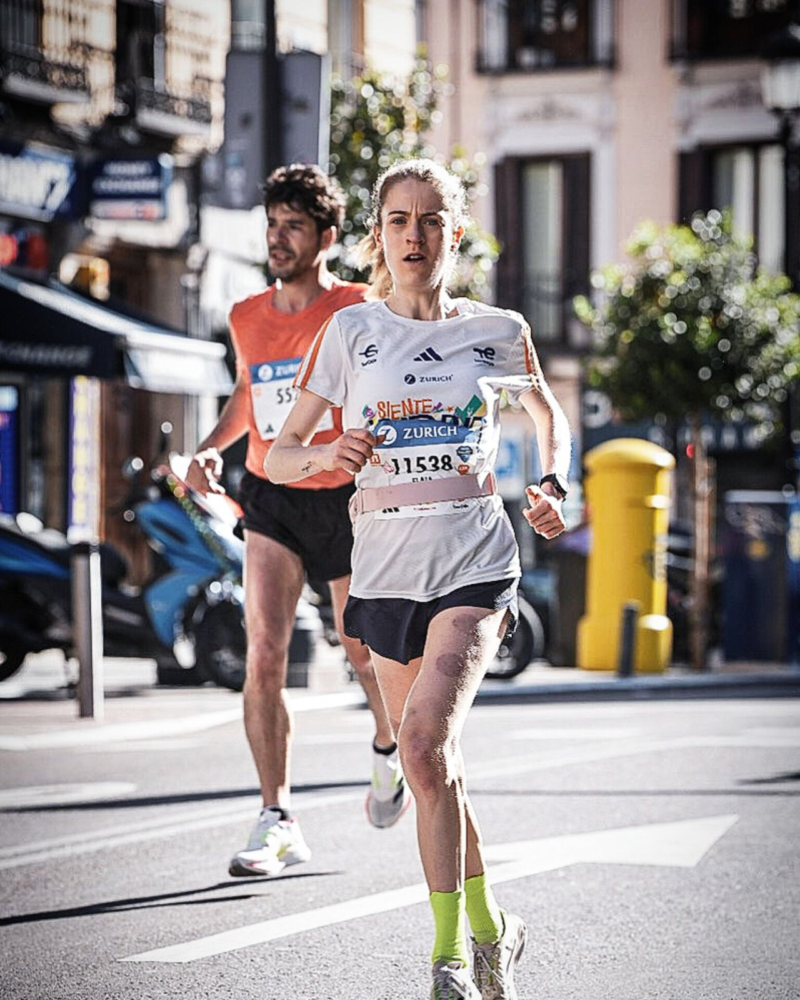

01 / RUNNING
Entrena con propósito.
Sesiones de carrera organizadas dentro del calendario de TrainingPeaks para seguir una progresión durante tu preparación.
12 semanas para preparar tus 21,097 km con una planificación organizada de running, fuerza y mentalidad. Sin improvisaciones y a tu ritmo.

Un programa diseñado para que tengas una hoja de ruta durante 12 semanas, combinando las piezas fundamentales de la preparación de una media maratón.
Sesiones de carrera organizadas dentro del calendario de TrainingPeaks para seguir una progresión durante tu preparación.
Trabajo de fuerza específico para corredores, integrado con el entrenamiento de carrera.
Herramientas y propuestas para entrenar la confianza, la constancia y la gestión del reto.
No necesitas contratar seguimiento individual para utilizar el programa. Es una planificación autoguiada que consultarás en TrainingPeaks.
Compra el programa por 80 € con el 21 % de IVA incluido en Stripe. El importe es de pago único. Venta dirigida a España peninsular y Baleares.
Al pagar, introduce el mismo correo que utilizas o utilizarás en TrainingPeaks. Si aún no tienes cuenta, puedes crear una gratuita.
Tras comprobar el pago, te compartiré manualmente el programa en TrainingPeaks en un máximo de 24 horas laborables. La activación no es inmediata.
Consulta las sesiones en el calendario y sigue la planificación de las 12 semanas.
Ideal si ya tienes una base de carrera y buscas una preparación estructurada que puedas seguir de forma autónoma.
Si empiezas desde cero, tienes una lesión, necesitas adaptar la carga a una condición de salud o buscas revisiones y cambios personalizados, este programa general puede no ser la mejor opción.
En ese caso puedes consultar mis servicios de entrenamiento personalizado.
No. Es un programa general, autoguiado, sin seguimiento ni adaptaciones individuales. Si necesitas ajustes específicos, puedes contratar un servicio personalizado por separado.
No. El precio de 80 € incluye únicamente la preparación de running, fuerza y mentalidad descrita en esta página.
El acceso al calendario se realiza mediante TrainingPeaks. Puedes abrir una cuenta gratuita; determinadas funciones avanzadas de la plataforma podrían requerir suscripción.
Una vez confirmado el pago, lo compartiré manualmente en TrainingPeaks utilizando el correo facilitado durante la compra, en un máximo de 24 horas laborables. No es una descarga ni una activación inmediata.
Está pensado para personas que ya tienen una base de carrera y pueden seguir una planificación general. No sustituye una evaluación individual y no es adecuado para todas las situaciones.
Las compras a distancia tienen, con carácter general, 14 días naturales de desistimiento y las garantías legales aplicables. Consulta las condiciones de compra para conocer el procedimiento. La entrega del plan, por sí sola, no elimina automáticamente esos derechos.
Escríbeme por Instagram o utiliza el formulario de contacto.
12 semanas · Running + fuerza + mentalidad · TrainingPeaks · Programa autoguiado sin seguimiento individual.